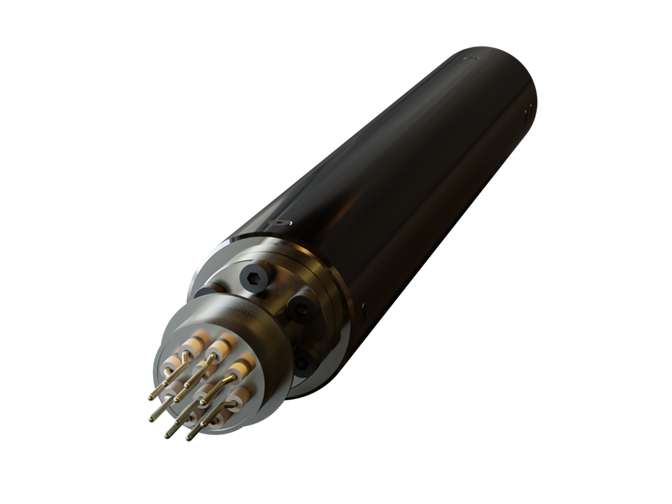
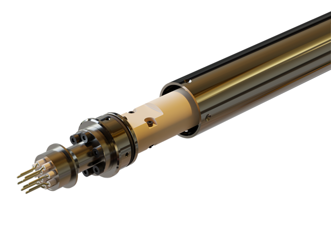
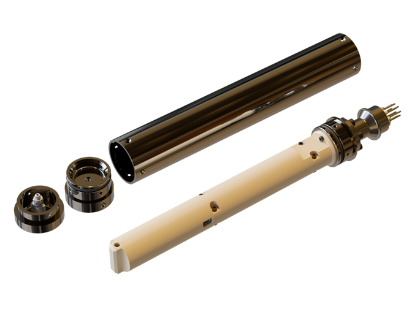
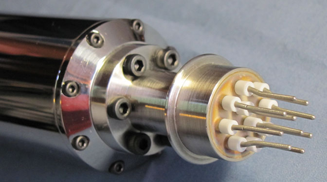

• ITEX7 is an instrument specially developed to operate at high temperatures inside an oven for heat treatment. The ITEX7 instrument have the capability to measure temperatures and roll of tubes for the tubular "Iron & Steel", and "Oil & Gas" industry on 7" pipes and tubes during the process, placed inside a high temperature oven for special processes.
• 5 measurement channels for type K thermocouple & accelerometer.
• General dimension: Φ 43.3 x 345 mm.
• Material: Nickel-Chrome alloy enclosure & Thermoplastic case.
• Implementing Ultra-low power consuption operational mode.
• Vacuum system.
• Software Support (GUI) for configuration mode & acquisition post processing data.


• Based on rugged high temperature extreme low power processor
• Dual bank memory Flash : 4 Mbytes.
• Dual power source, based on high temperature battery management.
• High presicion Analog Front-End with dedicated amplifiers and filters.
• Specially autocallibrated mode for reference use.
• Status indicators by visual LEDs on configuration procedure.
• Operating temperature -5°C a 125°C .
• Improved download speed over the second version generation